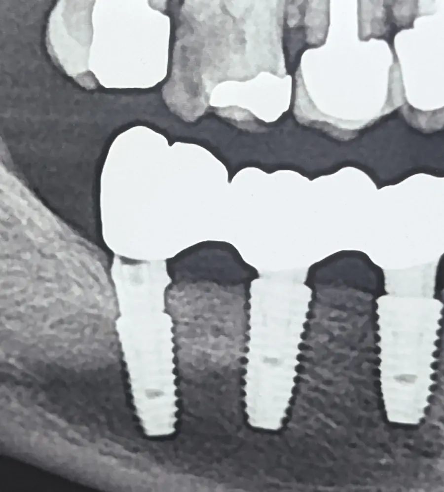
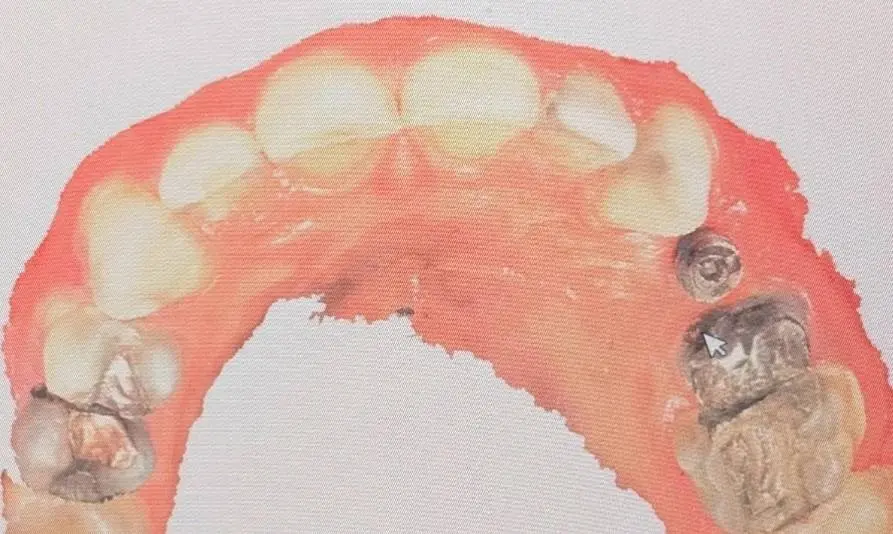

نسخه استخراجشده؛ ترجمه یا تأیید علمی انجام نشده است. وضعیت: captured
بیمار با شکست در ناحیهی جوینت بین واحدهای ۶ و ۷ مراجعه کرده است. بررسی تصاویر پیش از شکست نشان داد که روکش واحد ۷ بهطور کامل روی اباتمنت ننشسته بوده است. طبق اطلاعات بیمار، پیشتر برایش اسکن دیجیتال انجام شده و روکشها بهصورت دیجیتال طراحی و ساخته شدهاند. خطا از کجا آمده است؟

در پروتزهای ایمپلنتی دیجیتال، انتقال دقیق اطلاعات Scan Body و انتخاب صحیح فایل کتابخانهای از ارکان درمان صحیح و موفق است؛ چه در رستوریشنهای تکواحدی و چه چندواحدی.
وقتی تطابق نهایی مشکل دارد، این دو خطا را جدی بررسی کن:
پیامد این خطاها این است که سیستم طراحی عملاً با یک مرجع اشتباه کار میکند؛ مثلاً تطابق با Scan Body کوتاه بهجای نوع بلند، و در نتیجه ساخت اباتمنتی با ارتفاع یا هندسهی نامتناسب.
در رستوریشنهای اسپلینت، ننشستن کامل یک واحد گاهی در مرحلهی سمان کردن کمتر واضح است؛ چون سازه به شکل یکپارچه نیرو و تماسها را توزیع میکند و خطای یک واحد ممکن است در نگاه اول «ماسکه» شود.
اگر روکش عملاً ساپورت مؤثر از سمت اباتمنت نداشته باشد، تمرکز تنش در ناحیهی کانکتور افزایش پیدا میکند و شکست از ناحیهی جوینت میتواند رخ دهد.
مسیر اصلاح بهجای حدسهای پراکنده باید به نقطهی مرجع برگردد:
Scan Body فقط «یک ابزار اسکن» نیست؛ مرجع هندسی طراحی است. هر خطا در انتقال داده یا انتخاب فایل مرجع میتواند مسیر درمان را از یک فیت قابلاعتماد به سازهای با تنش پنهان و شکست دیرهنگام تبدیل کند.
در اسکن داخل دهانی معمولاً محدوده را تا حد ممکن محدود نگه میداری، چون با بزرگتر شدن ناحیهی اسکن خطاهای stitching بیشتر میشود و ممکن است دقت نهایی کم شود. با این حال در بعضی کیسها میشود این اصل را آگاهانه کنار گذاشت.

ایمپلنت در ناحیهی پرهمولر اول فک بالا بود، ولی دندان مجاور یعنی پرهمولر دوم فرم مناسبی نداشت و نمیتوانست مرجع قابل اعتمادی برای طراحی تاج باشد. محدودهی اسکن عمداً گسترش یافت تا پرهمولر اول سمت مقابل هم داخل اسکن قرار بگیرد؛ تکنسین لابراتوار یک مرجع آناتومیک سالم داشت و فرم تاج را بر اساس آن طراحی کرد، نه بر اساس دندانی که خودش فرم صحیحی ندارد.
اینجا مقدار کمی کاهش دقت عددی اسکن پذیرفته شد تا در مقابل، فرم نهایی زیباتر و قابلقبولتری در طراحی تاج به دست بیاید.